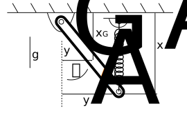

Show code cell content
import numpy as np
from scipy import linalg
import matplotlib.pyplot as plt
plt.style.use('fivethirtyeight')
from scipy.integrate import solve_ivp
Example: Pendulum support by spring has two stable positions#

The link shown above is resting in equilibrium. There is spring that can slide left-right attached to the support above. Gravity acts downward. The spring applies no force when \(x_A=0~m\). The link has mass, \(m=1~kg\), spring stiffness, \(k=100~N/m\), and length, \(l=1~m=\sqrt{x_A^2+y_A^2}\)
Here, I write the total virtual work done by gravity and the spring in terms of virtual displacements, \(\delta x_G\) and \(\delta x_A\)
\(\delta W = mg\delta x_G -kx_A\delta x_A\)
\(x_A = l\cos\theta\)
\(x_G = \frac{l}{2}\cos\theta\)
Then, I write the total virtual work done by gravity and the spring in terms of virtual displacement, \(\delta \theta\)
\(\delta W = (mg\frac{l}{2}\sin\theta - kl\cos\theta l\sin\theta)\delta \theta\)
The static solution is solved here,
m = 1
l = 1
k = 10
g = 9.81
theta = np.linspace(0,np.pi)
Wgrav = m*g*l/2*np.sin(theta)
Wspr = k*l*(np.cos(theta))*l*np.sin(theta)
theta_sol = np.arccos(m*g/2/k/l)
plt.plot(theta, Wgrav, label = 'gravity virtual work')
plt.plot(theta, Wspr, label = 'spring virtual work')
plt.plot(theta_sol, m*g*l/2*np.sin(theta_sol),'o', markersize=20)
plt.xlabel(r'$\theta$ (rad)');
plt.ylabel(r'$\frac{f(\theta)}{\delta \theta}$')
plt.legend();
theta_sol*180/np.pi
60.626549578274364
What does a dynamic solution look like?#
The dynamic solution includes the variation in kinetic energy,
\(\delta T = \left[\frac{\partial T}{\partial \theta} - \frac{d}{dt}\left(\frac{\partial T}{\partial\dot{\theta}}\right)\right]\delta \theta\)
\(T = \frac{1}{2}I_O\dot{\theta}^2\)
\(I_O = \frac{ml^2}{3}\)
\(\delta T = -\frac{ml^2}{3}\ddot{\theta}\delta \theta\)
Now, plug in the virtual work from before.
\(\delta T = \delta W\)
\(-\frac{ml^2}{3}\ddot{\theta} = mg\frac{l}{2}\sin\theta - kl\cos\theta l\sin\theta\)
\(\ddot{\theta} = \frac{3k}{m}\cos\theta\sin\theta - \frac{3g}{2l}\sin\theta\)
def support_pendulum(t,y):
dy = np.zeros(y.shape)
dy[0] = y[1]
dy[1] = 3*k/m*np.cos(y[0])*np.sin(y[0])-3*g/2/l*np.sin(y[0])
return dy
support_pendulum(0,np.array([theta_sol,10]))
array([ 1.00000000e+01, -1.77635684e-15])
for i in range(1,10):
perturb = 0.1*i
sol = solve_ivp(support_pendulum,
[0,6], # time
np.array([theta_sol+perturb, 0]), # initial conditions theta(t=0)= eqbm+perturb-angle, dtheta/dt = 0
t_eval = np.linspace(0,6, 100))
plt.plot(sol.y[0], sol.y[1], label = r'$\theta_{eqbm}$'+'+{:.1f}'.format(perturb))
plt.xlabel('angle (rad)')
plt.ylabel('angular velocity (rad/s)')
plt.legend()
<matplotlib.legend.Legend at 0x7fb7b1d566a0>
Extra: Try to build a linear system for small angles#
Normally, you can use a Taylor series around \(\theta=0\) to solve, but the equilibrium position is not \(\theta=0\). You know that when \(\ddot{\theta}=0\), the equilibrium position is
\(\cos\theta_{eqbm}=\frac{mg}{2kl}\).
Take an extra 2 steps:
substitute \(\phi = \theta -\theta_{eqbm}\)
expand the equation of motion about \(\theta_{eqbm}\)
\(\sin(\phi + \theta_{eqbm}) \approx \phi + \theta_{eqbm}\)
\(\cos(\phi + \theta_{eqbm}) \approx 1\)
Now, the linearized equation of motion is as such
\(\ddot{\phi} = (\frac{3k}{m} - \frac{3g}{2l})(\phi + \theta_{eqbm})\)
separated into homogeneous and particular solutions,
\(\phi(t) = \phi_H(t) + \phi_P(t) = A\cos\omega t +B\sin\omega t +\phi_P\)
\(\ddot{\phi}_H =(\frac{3k}{m} - \frac{3g}{2l})\phi_H\)
and
\(\ddot{\phi}_P = 0 \rightarrow \phi_P = -\theta_{eqbm}\)
Using intial conditions, \(\phi(0) = 0\) and \(\dot{\phi}(0) = \phi_0\)
\(\phi(t) = \theta_{eqbm}\cos\omega t +\frac{\dot{\phi_0}}{\omega}\sin\omega t-\theta_{eqbm}\)
where
\(\omega = \sqrt{\frac{3g}{2l} -\frac{3k}{m}}\)
dphi0 = 0.1
w = np.sqrt(-3*g/2/l+3*k/m)
t = np.linspace(0,4*np.pi/w)
phi = theta_sol*np.cos(w*t) + dphi0/w*np.sin(w*t) - theta_sol
plt.plot(t,phi)
[<matplotlib.lines.Line2D at 0x7fb7b9ee7670>]